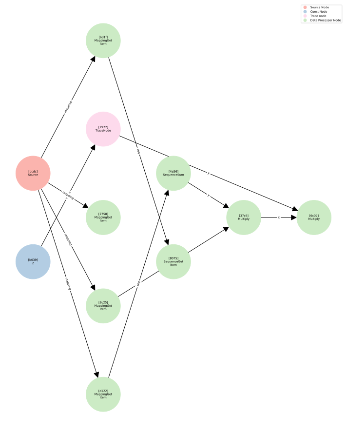
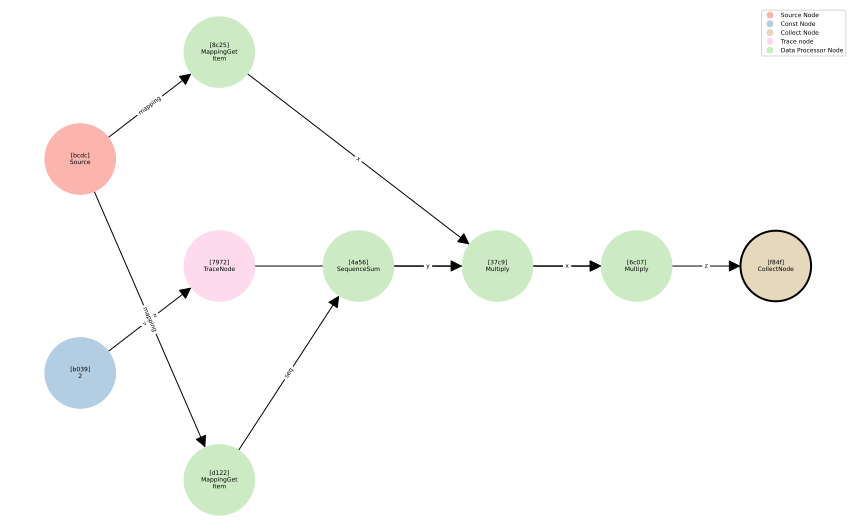

Basics of Data Flows¶
At the core of hyped lies the DataFlow class, which facilitates the construction of flexible and efficient data processing pipelines. Data flows allow you to define and organize a series of transformations that can be applied to datasets, supporting a wide range of use cases from simple processing tasks to complex workflows.
In this tutorial, we will walk you through the essentials of using the DataFlow class to create powerful data pipelines. By the end of this tutorial, you will understand how to:
Initialize a
DataFlowand access the source features.Add processing steps to the
DataFlowinstance.Build and apply the
DataFlowinstance to a dataset.
[21]:
%config InlineBackend.figure_format = 'svg'
Imports¶
To get started, we first need to import the required libraries and modules. These will provide the necessary tools for working with datasets and the DataFlow framework.
[22]:
import datasets
from hyped import DataFlow, plot_data_flow
from hyped.typing import Int, Sequence, Mapping, Len, Annotated
Creating a Sample Dataset¶
Next, we’ll create a simple dataset using the HuggingFace datasets library. This dataset includes a few sample features to work with, making it easy to understand how to build and apply data flows.
[23]:
ds = datasets.Dataset.from_list(
[
{"i": 0, "x": [1, 2]},
{"i": 1, "x": [2, 3]},
{"i": 2, "x": [3, 4]},
{"i": 3, "x": [4, 5]},
],
features=datasets.Features(
{
"i": datasets.Value("int32"),
"x": datasets.Sequence(datasets.Value("int64"))
}
)
)
Initializing a DataFlow Instance¶
The simplest way to initialize a DataFlow instance is to use the dataset features.
[24]:
flow = DataFlow(ds.features)
By providing the dataset’s feature schema, we directly tie the DataFlow to the dataset, allowing seamless interaction with its data. This approach is ideal for straightforward use cases where the dataset schema is sufficient to define the flow.
Understanding flow.source¶
The source property of a DataFlow instance provides access to the source features, which serve as the input data for your processing pipeline. This is a (potentially nested) object that reflects the structure of your input dataset.
Key Characteristics:
It behaves like a Python dictionary, allowing you to access features by their names (keys).
The source features are dynamically typed based on the dataset schema or the provided mapping class during initialization.
Accessing Features
To access specific input features, simply use dictionary-style indexing. For instance:
[25]:
# Accessing the input feature 'i'
flow.source["i"]
[25]:
Int32Feature(ref=ConcreteReference(_node_id='2758ff6a-d2a3-63d0-ba31-3b52bebcbe2a', _graph=<hyped.core.graph.DataFlowGraph object at 0x1295aea20>, _builder=<hyped.core.builder.DataFlowGraphBuilder object at 0x1295aecc0>))
If a feature is a sequence, you can further index into it:
[26]:
# Accessing the first value in the sequence feature 'x'
flow.source["x"][0]
[26]:
Int64Feature(ref=ConcreteReference(_node_id='807584c5-da8a-ecb8-1592-5fb20e963d76', _graph=<hyped.core.graph.DataFlowGraph object at 0x1295aea20>, _builder=<hyped.core.builder.DataFlowGraphBuilder object at 0x1295aecc0>))
This approach makes defining processing pipelines intuitive and Pythonic, as you work directly with the features as you would with a native Python object. In the next section, we’ll explore how to build processing pipelines using these source features.
Building Processing Pipelines¶
Defining processing pipelines is as simple and intuitive as performing standard Python operations. You work directly with the flow.source features, applying computations and transformations to build the desired outputs.
Suppose you want to compute the sum of the values in the sequence feature x and multiply it by the scalar feature i. This can be done effortlessly with the following expression:
[27]:
y = flow.source["i"] * flow.source["x"].sum()
Note that the result y is itself a feature, meaning it can be further processed or combined with other features and operations in the pipeline.
[28]:
z = y * 2
Here, z is derived by multiplying the feature y with a constant value. This flexibility allows for easy integration of constants into your pipelines.
While using DataFlow is simple and Pythonic, it operates under the hood by building a directed graph of processing steps. Essentially, DataFlow constructs an abstract syntax tree (AST) of the processing pipeline, with nodes representing individual operations or transformations.
To gain insight into the inner workings of your pipeline, you can visualize the flow of data and the operations being performed at each step. This can be easily done using the following function:
[29]:
plot_data_flow(flow);

Note how all operations taken so far are represented by a separate node in the AST. This also includes indexing operations (e.g. flow.source["i"]).
Building the Data Flow¶
Up until now, we’ve been defining the processing pipeline and visualizing it, but no output has been explicitly defined. The next step is to build the data flow, where we specify the output and prepare the graph for execution. During this step, the data flow is optimized, and unnecessary computations are eliminated.
In the visualized graph, you may notice multiple “dead ends” or nodes that are not directly involved in the final output. The building process takes care of these redundancies and ensures that only the relevant parts of the graph are retained for computation.
To build the data flow, you can use the build() method and specify which parts of the pipeline should produce the output.
[30]:
flow = flow.build(collect={"z": z})
The collect argument specifies the output features you want to retain, in this case, z. The build() function will optimize the graph and include only the necessary nodes required to compute z. This can be seen when visualizing the build flow.
[31]:
plot_data_flow(flow);

Applying the Data Flow¶
Once the data flow has been defined and built, and the output has been specified, the final step is to apply the data flow to a dataset. This is done by passing the dataset to the apply() method.
[32]:
out_ds = flow.apply(ds)
This step processes the input dataset ds according to the defined pipeline and produces the output dataset out_ds.
Note that the features of out_ds align with the collect argument.
[33]:
out_ds.to_dict()
[33]:
{'z': [0, 10, 28, 54]}
Advanced Usage¶
In this section, we will explore more advanced features of theDataFlow that allow you to build flexible, dataset-independent workflows and perform powerful dataset-wide operations. You’ll learn how to define custom input schema types that provide fine-grained control over your data’s structure, enabling you to design reusable and dynamic data flows.
Let’s start by exploring how to define custom input schemas and proceed to dataset aggregation with DataFlow.
Custom Input Schema Definition¶
In the previous section, we covered basic initialization by using the dataset’s feature schema or a simple custom mapping. Now, we’ll dive deeper into creating and using custom input schemas. This allows you to define reusable, dataset-independent data flows that can be shared across various datasets, making your data pipeline more flexible and efficient.
1. Defining a Dustom Input Schema
A custom input schema allows you to define your data structure more explicitly. By subclassing the Mapping class, you can specify the expected data types and additional constraints. This helps ensure the schema is well-defined, making your data flow more predictable and type-safe.
[34]:
# Defining a custom input schema
class Inputs(Mapping):
i: Int
x: Annotated[Sequence[Int], Len(2)]
Here, the Inputs schema specifies that i should be an integer, and x should be a sequence of exactly two integers.
2. Initializing the DataFlow from the Custom Schema
You can initialize the DataFlow instance using this custom Inputs schema. This will infer the feature types from the schema, making it easier to map to a variety of datasets without specifying the features upfront.
[35]:
flow = DataFlow[Inputs]()
print("Inferred Data Type of feature 'i':", flow.source['i'].dtype)
Inferred Data Type of feature 'i': Int64
In this case, the DataFlow is initialized with the Inputs schema. Note that generic types will be concretized, i.e. the type of i is inferred as Int64 based on the generic Int annotation.
3. Validation and Dataset Feature Matching
When you initialize a DataFlow with both the custom schema and dataset features, the framework will perform validation to ensure that the dataset features align with the schema. If the dataset features don’t match the expected types in the schema, an error will be raised.
[36]:
flow = DataFlow[Inputs](ds.features)
print("Inferred Data Type of feature 'i':", flow.source['i'].dtype)
Inferred Data Type of feature 'i': Int32
In this case, the generic type Int is concretized based on the concrete dataset features, leading to i being of type Int32 this time.
Dataset-Wide Aggregation¶
The DataFlow class also provides the ability to perform dataset-wide aggregation, which is useful for computing global statistics or processing the entire dataset in a more holistic way. You can easily compute summary statistics such as the sum, mean for any feature in the dataset. Here’s how to aggregate the values of the feature i across the whole dataset:
[37]:
# Create a new DataFlow instance
flow = DataFlow(ds.features)
# Aggregate the values of 'i' over the whole dataset
i_sum = flow.source["i"].sum()
In this example, i_sum computes the sum of the values of feature i across the entire dataset. You can apply similar aggregation functions for other statistics like mean.
2. Applying the Aggregation to the Dataset
Once the aggregation is defined, you can apply it to the dataset using the apply method. This allows you to compute the desired aggregate values and access them alongside the transformed dataset.
[38]:
# Apply the aggregation to the dataset
out_ds, aggregates = flow.apply(ds, collect=flow.source, aggregate={"sum(i)": i_sum})
# Inspect the aggregates
print(aggregates)
{'sum(i)': 6}
The apply method performs the aggregation and collects the results. The output dataset out_ds contains the transformed data, while the aggregates dictionary holds the computed aggregation values. In this case, aggregates will contain the sum of feature i.
Multi-Dataset Aggregation¶
In some cases, you may want to use the build method to construct the data flow with predefined aggregations and then access those aggregates as a property of the DataFlow instance. This approach is slightly different from the above, as the aggregates are retained and updated across multiple calls to apply.
Use the build method to prepare the DataFlow with the aggregation operation. This will allow you to apply the aggregation across the dataset, but the results will be stored as part of the DataFlow instance and accessible through its aggregates property.
[39]:
# Create a new DataFlow instance
flow = DataFlow(ds.features)
# Aggregate the values of 'i' over the whole dataset
i_sum = flow.source["i"].sum()
# Build the DataFlow with aggregation
flow = flow.build(collect=flow.source, aggregate={"sum(i)": i_sum})
The build method sets up the flow and specifies the aggregation operation (in this case, the sum of i). The aggregation state will be retained and updated as you apply the flow to the dataset.
Once the flow is built, you can call the apply method to process the dataset. The aggregates will be updated with each call to apply, and you can access the current state of the aggregates at any point using the aggregates property.
[40]:
# Apply the DataFlow to the dataset
_ = flow.apply(ds)
# Print the aggregates after the first apply
print("First apply: ", flow.aggregates)
# Apply the DataFlow to the dataset again
_ = flow.apply(ds)
# Print the aggregates after the second apply
print("Second apply:", flow.aggregates)
First apply: {'sum(i)': 6}
Second apply: {'sum(i)': 12}
Conclusion¶
In this tutorial, we’ve walked through how to define and build data processing pipelines using the DataFlow framework. From initializing the data flow and working with features to optimizing the computation graph and applying the flow to a dataset, each step allows you to easily transform and process data in a clean and efficient way.
To recap, the entire process boils down to just a few lines of code:
[41]:
flow = DataFlow(ds.features)
flow = flow.build(collect={"z": 2 * (flow.source["i"] * flow.source["x"].sum())})
out_ds = flow.apply(ds)
This approach simplifies complex workflows, making it possible to define, optimize, and execute data transformations efficiently. With just a few steps, you can go from raw data to the processed output, all while ensuring that your pipeline is both scalable and easily maintainable.